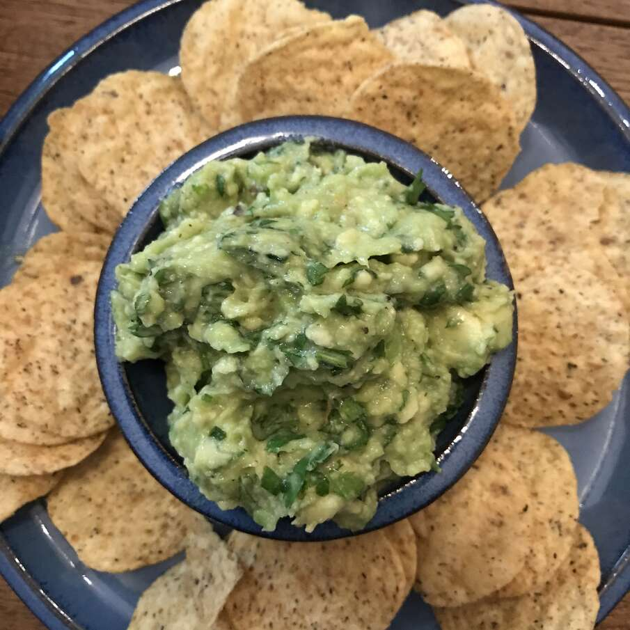

Simpy Guacamole

Description
This is so easy and so good. It's always the hit of the party and it's gone before anything else on the table.
Ingredients
- 5 avocados - peeled, pitted, and mashed
- 2 tablespoons fresh lemon juice
- ¾ cup minced green onion
- ½ cup minced fresh cilantro
- salt and pepper, to taste
Steps
- Stir together the avocado and lemon juice ni a serving bowl.
- Add the green onion and cilantro.
- Mix well.
- Season with salt and pepper.
- Serve immediately or store covered in refrigerator with avocado pits in the bowl to keep from browning.
Original Source